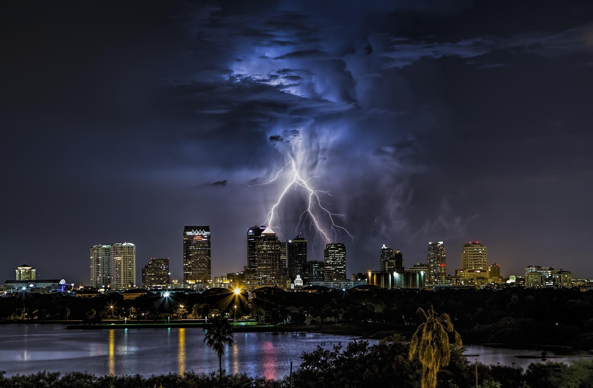

All About Tampa
Fun Facts
Did you know that . . .

Tampa has the longest continuous sidewalk in the world — Bayshore Boulevard stretches 4.5 miles along the water.

Tampa’s name comes from a Calusa word meaning “sticks of fire,” likely referring to lightning.

Tampa is the lightning capital of North America.

Tampa hosts the annual Gasparilla Pirate Festival, celebrating the legend of José Gaspar.

The Columbia Restaurant in Ybor City is the oldest restaurant in Florida (1905).

The first commercial airline flight in the world took off from St. Petersburg to Tampa in 1914.

Ybor City was once known as the “Cigar Capital of the World,” producing over 500 million cigars a year.

The Tampa Theatre, built in 1926, is one of the most elaborate movie palaces ever constructed.

The Tampa Bay Hotel, built in 1891, had the first electric lights in Tampa.

Ybor City’s wild chickens are protected by city law.